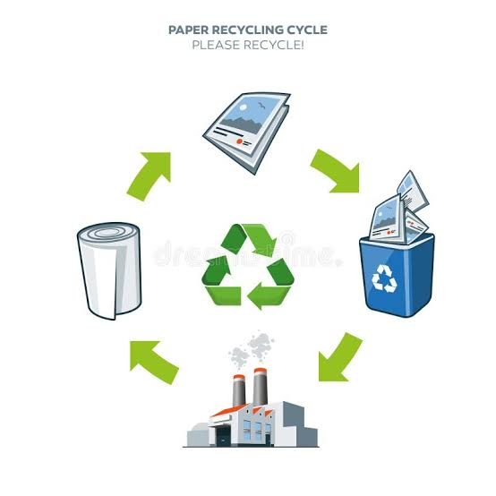
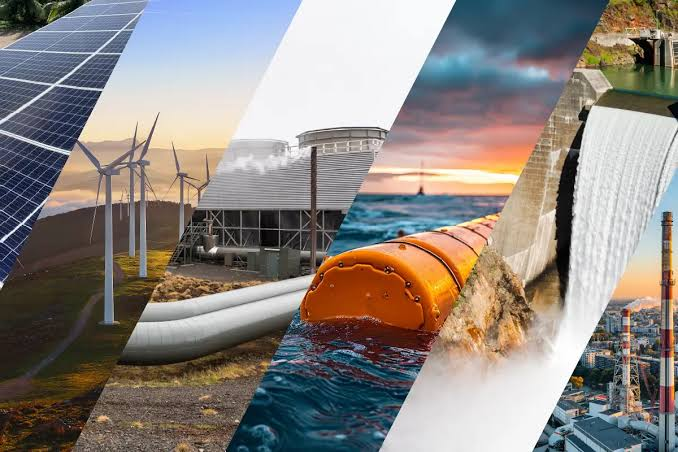
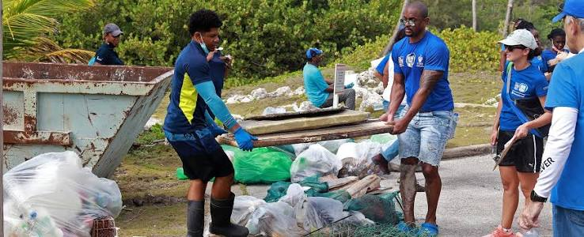
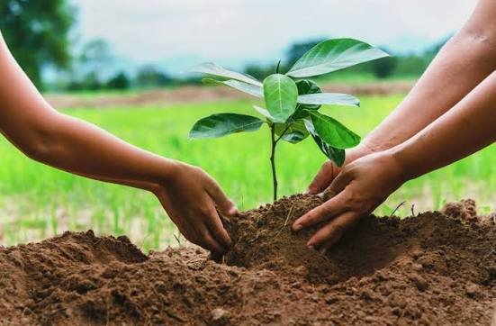

Environmental Initiatives
| Image | Description |
|---|---|
|
 Image: Recycling bins (Unsplash, 2026). |
Recycling helps keep our environment clean by reducing plastic pollution. Recycling helps protect the environment by reducing pollution and keeping our surroundings clean. It saves natural resources, reduces waste in landfills and saves energy. Recycling also protects wildlife and helps fight climate change. By recycling materials such as plastic, paper and glass, we can create a cleaner and healthier environment for future generations (U.S. Environmental Protection Agency [EPA], 2025). |
|
 Image: Solar panels and wind turbines (Pexels, 2026). |
Solar and Wind energy provide cleaner alternatives to fossil fuels. Solar and renewable energy are important for protecting the environment. Solar energy comes from sunlight and can be converted into electricity using solar panels. Other renewable energy sources include wind, water (hydropower) and geothermal energy. These energy sources are naturally replenished, reduce pollution and help fight climate change. Using renewable energy can also reduce our dependence on fossil fuels and create a cleaner, healthier future (United Nations [UN], 2025). |
|
 Image: Volunteers cleaning up litter (Unsplash, 2026). |
Working collaboratively to remove litter helps keep our parks, streets and beaches clean. Working together is important in the fight against pollution. Individuals, communities, schools and governments can collaborate by organising clean-up activities, recycling waste and planting trees. Businesses can also help by reducing plastic use and adopting environmentally friendly practices. By sharing ideas and taking responsibility, we can reduce pollution, protect wildlife and create a cleaner and healthier environment for future generations (World Wide Fund for Nature [WWF], 2024). |
|
 Image: Young sapling being planted (Pexels, 2026). |
Planting trees improves air quality and supports wildlife. Planting trees is important for protecting the environment. Trees absorb carbon dioxide and release oxygen, helping to improve air quality and reduce pollution. They also provide food and shelter for birds and other wildlife. In addition, trees help prevent soil erosion and keep the environment healthy. By planting more trees, we can create a greener and healthier planet for future generations (Food and Agriculture Organization [FAO], 2024). |
Listen and Learn
Listen to our sustainability awareness messages and enjoy the sounds of nature. Discover why protecting the environment is important for future generations (Conservation International, 2014).
Watch and Discover
Videos are a great way to understand environmental challenges and discover practical solutions. Watch this video to learn how to make a big difference (YouTube, 2026).
References
- Conservation International (2014). Nature Is Speaking [Audio/Campaign]. Available at: https://conservation.org (Accessed: 18 November 2026).
- Food and Agriculture Organization [FAO] (2024). The State of the World's Forests 2024. Rome: FAO. Available at: https://fao.org (Accessed: 18 November 2026).
- Pexels (2026). Solar panels and wind turbines [Photograph]. Available at: https://pexels.com (Accessed: 18 November 2026).
- Pexels (2026). Young sapling being planted [Photograph]. Available at: https://pexels.com (Accessed: 18 November 2026).
- United Nations [UN] (2025). What is renewable energy? Climate Action. Available at: https://un.org (Accessed: 18 November 2026).
- United Nations Environment Programme [UNEP] (2024). Beat Pollution: Protecting Our Planet Together. Available at: https://unep.org (Accessed: 18 November 2026).
- Unsplash (2026). Recycling bins and graphics [Photograph]. Available at: https://unsplash.com (Accessed: 18 November 2026).
- Unsplash (2026). Volunteers cleaning up litter [Photograph]. Available at: https://unsplash.com (Accessed: 18 November 2026).
- U.S. Environmental Protection Agency [EPA] (2025). Recycling Basics and Benefits. Available at: https://epa.gov (Accessed: 18 November 2026).
- World Wide Fund for Nature [WWF] (2024). Tackling Plastic Pollution and Community Action. Available at: https://worldwildlife.org (Accessed: 18 November 2026).
- YouTube (2026). Environmental Problems Explained: Pollution, Climate Change & Solutions [Video]. Available at: https://youtube.com (Accessed: 18 November 2026).